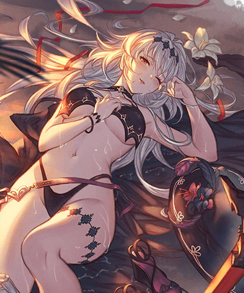
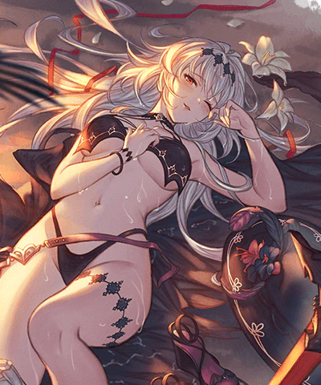
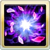
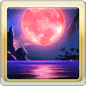

・欲望Lv+1(最大5/無法消除)
・水屬性6%乘以欲望Lv追擊(最大30%)
・普攻賦予傷害+5%乘以欲望Lv(最大25%/天司類加算)
水着闇ジャンヌ
基本資訊
| 定位 | 攻擊 |
| 得意武器 | 劍 |
| 種族 | 人類 |
| CV | 潘めぐみ |
立繪
上限解放前||上限解放後 

奧義
| ヴァルキリー・ノワール | |
| 水屬性4.5倍傷害 1技能CD歸0 |
主動技能
|  CD:8 |
コンフロント |
| 消耗自己當前80%HP，我方全體水屬性角色獲得以下效果 ・逆境(30%~90%/5T) 依據欲望Lv追加效果 ・水屬性攻擊+10%乘以欲望Lv(最大50%/3T) ・水屬性10%乘以欲望Lv追擊(最大50%/3T) |
|
CD:7 |
ミラー･リヴァーサル |
| 賦予敵方全體以下效果 ・火屬性攻擊-10% ・水屬性防禦-25% 暗闇效果(觸發機率20%/180秒) 賦予自己不浄效果(無法回復/4T) └每回合HP-10%(最大1000) └奧義值-10% |
|
|  | エターナル・リフレクション |
| 賦予自己月鏡效果(無法消除且無法延長/19T) └受到致命傷害時，讓HP維持為1並抵銷死亡/弱體效果無效 ◆效果結束時，自己死亡/無法再次使用不可 |
被動技能
|
ファーティブマインド |
| 我方使用會消耗HP的技能時，賦予以下效果 ・欲望Lv+1(最大5/無法消除) ・水屬性6%乘以欲望Lv追擊(最大30%) ・普攻賦予傷害+5%乘以欲望Lv(最大25%/天司類加算) |
|
|
グラモロソ･ラ･ピュセル |
| 受到回合性傷害時，自己TA機率+100%/奧義值+20% |